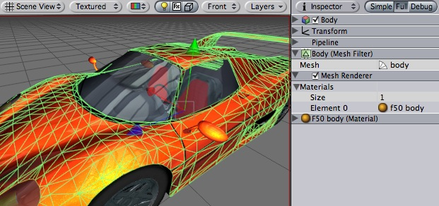

Previous
Previous
At the core of any 3D game are Meshes - objects consisting of triangles, with textures applied.
Meshes in Unity are passed through render pipeline. Although there may be many variations, most often a pipeline consists of a Mesh Filter and a Mesh Renderer:
- The filter loads mesh from mesh asset. Regular meshes use a Mesh Filter, while skinned meshes use a Skinned Mesh Filter.
- The renderer displays it at the Game Object's position.
- The appearance of the mesh is controlled through renderer's Materials.
|  |
A Mesh Filter together with Mesh Renderer makes the model appear on screen. Car model courtesy of ATI Technologies Inc.